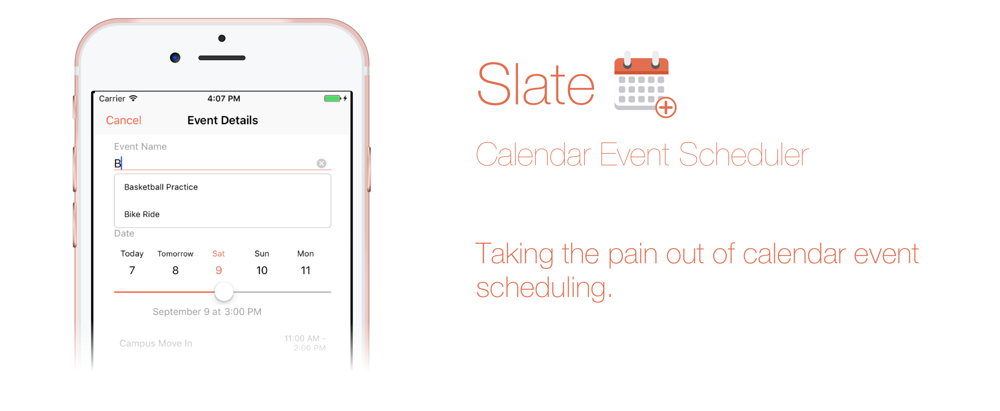
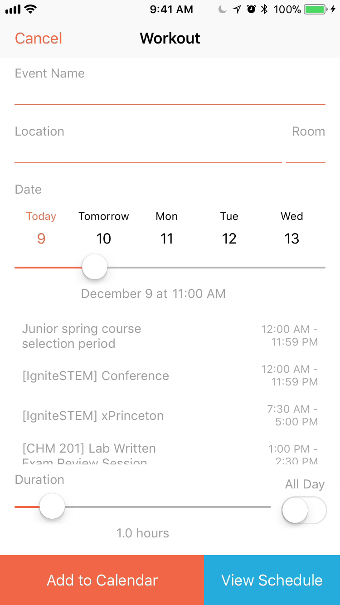
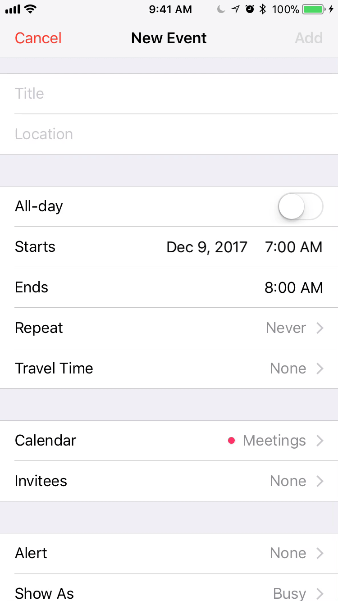
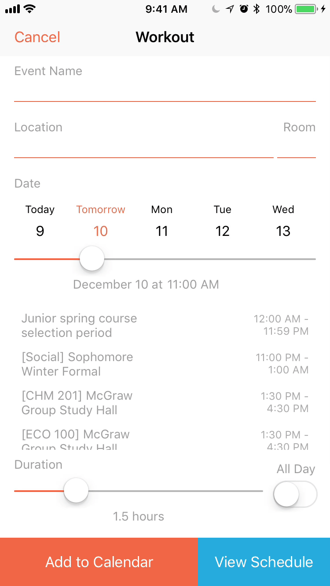

< Return to all blogs
Slate: Taking My First Solo iOS App from R&D to Full Scale Product
A detailed post about my journey in publishing my first iOS app.

Introduction
I released my first solo iOS app, Slate Scheduler, on the App Store a couple months ago. It can be found on the Apple App Store. Because of school and other commitments, I only just finished this blog post detailing the research, design, and implementation.
Inspiration
The inspiration for this project was that, as a busy college student, I was scheduling basically the same calendar events all too often and each time it would still take me an average of 30 seconds to do on my phone. I found that 90% of my scheduled events were “irregularly repeating” events, that is, they had the same event names and locations, the only thing that changed were their times.
Think about having dinner with someone. I’d have dinner with Person A, let’s call him/her Alex. Alex and I get a meal once a week when we can, generally between 5 PM and 8 PM, and typically at one of three dining halls on campus. As you can see, there is a consistency in options, but because Google Calendar or iOS Calendar only allow you to copy events exactly, there was no way for me to pick and choose which parts of past events I wanted to include in the calendar event for my dinner with Alex next week. This meant that I’d have to create my calendar event for dinner with Alex every single time, going through the monotonous process of typing in the name, searching a location, and using a hurrendous date picker for the time of dinner.
Frustrated, I took a macroscopic and critical look at the “mainstream” calendar apps, narrowing my painpoints to two main problems:
- Existing apps, like the iOS and Google calendar clients, were designed for completeness — migrating all features from the desktop to mobile — resulting in a bloated product that didn’t keep simplicity in mind.
- The interface for scheduling events largely remained the same across all clients: date pickers, checkboxes, scrolling — a slow but accepted and standardized user experience.
I decided that I wanted to solve this horrific problem of calendar event scheduling by building a user-experience so simple and painless, that you would prefer it to your powerful desktop calendar clients.
Designing the User-Experience
Research & Identifying the Problem
When researching, I discovered that every app pretty much has the same UI for creating an event. As someone who schedules four of five events a day, spending 30 seconds populating a form felt sluggish and irritating. I found myself increasingly annoyed at how limited the market was.
Certain features, that would feel natural to include, simply didn’t exist. For example, in Google Calendar, pressing “Done” (ie. the return key) would simply close the keyboard instead of focusing on the next logical text box below it. Pressing the location text box would take you to a completely new page — adding two more screen clicks than it “should” take.
Like I mentioned earlier, another the huge point of frustration was the fact that once you pressed “Create New Event”, there was no way for you to check your current schedule simultaneously. No mainstream calendar client that I researched had this feature.
Defining the Challenge
The challenge was to attack this basic task of adding a calendar event from your phone in a way that was quick, intuitive, and yet still powerful. I had to create a user-experience that would minimize taps, keyboard key presses, and especially, screen switches. Furthermore, I had to add the ability for users to see their availability on any given day so that they could view their schedules while creating the event.
Formulating Ideas
I approached my “solution” by looking through the eyes of a perspective user. What exactly do users want? What feels intuitive? Because I naturally have my own bias and style of scheduling events, what changes to the user experience can be generalized to any person wishing to schedule evets?
I first identified my core target audience. This app was to be a scheduler — used for frequent, but inconsistent events. The busy student, parent, or professional using this to schedule meetings, meals, and other random events, would generally have no desire to change their notification time, add guests, select a color for the event, add a note, etc. These are all features that could be useful on the desktop, but ultimately, wouldn’t be touched except for in specific edge cases. After asking friends, family, and coworkers, I found that this was consistent across the majority of people who I would be targeting.
With this in mind, I could then trim down fields that my user wouldn’t need: guests, custom notification times (a default for all events will do), event color, notes, URL & file attachments, free/busy selection, visibility, travel time (automatically taken care of automatically by iOS/Mac), and event privacy. This left the bare neccessities:
- Name of the event
- Start and end time
- Location
These three elements can be broken into two groups: text fields and dates. Text fields were an easier component to tackle, but it took some thought to generate a good date picking user experience.
Designing the Text Fields
The text fields ultimately came down to minimizing the number of keyboard key presses. A lot of time is wasted typing the same event name and loction over and over again. I decided that every text field should have a list of text suggests based on historical data: events that you add frequently would have a higher liklihood of showing up. It’d be an autocomplete text field that would double as a search box of sorts (think Google search suggestions). This would make “typing” the names of events a matter of simply pressing the suggestion or searching then selecting.

The location input would work in the same way. Most location search boxes direct you to a new, fullscreen search page which both feels annoying and takes longer. With these autocomplete text fields, all interaction could take place on the same page.
 
I also wanted an easy way to prepend a room number or some sort of text before the location. With most calendar clients, because you’d be searching for an exact location, you wouldn’t have the ability to both search for a real location and add a room number. I solved this problem by splitting the location text field into two: a main location field with Google maps searching and a smaller text field to add a small chunk of text before the actual location.
Another dead-simple, but unfortunately left out features is the ability to press the return key on the keyboard to move to the next text field. In Slate, you can easily zip between the required text fields. Pressing “Return” or a listed suggestion will take you to the next text field. Currently, the flow goes from event name to location and then to room number.
Designing the Date Picking
Instead of the clunky scrolling date and time pickers, I decided to take a more elegant approach and avoid this method as much as possible. Because scheduling events generally happens within the next week or two, I created a horizontal scrolling date picker that better served the goal of selecting a date.
Engineering — The Implementation
Slate uses a predictive model that strengthens with usage to allow you to schedule calendar events quickly and easily without the painpoints of date pickers, multiple pages, and many other irritating, but commonly used, UI standards. I’ve built and will open-source many of the components that I built for this project including autocomplete text boxes and rounding step sliders.
I will not focus on the implementation as much simply because I’ve already covered a lot of the topics in other blog posts. Here are some of the few blog posts:
- Swift Classes August 2017: Classes, Subclasses, and Protocols
- Swift Tips and Tricks February 2017: UI Text Field Styling and Force Touch App Shortcuts
- Data Types December 2016: Dictionaries and Symbol Tables
- Swift Core Data Basics: Storing App Data
- Swift Navigation Basics: How to Setup a Tab Bar App
- Persist Data: Storing Values Locally Using Swift
- And many more that can be found in the iOS category of my blog site
What I Learned
I learned a whole lot from this project both from a UX design standpoint as well as from an engineering, marketing, and critical thinking perspective. Unlike my previous iOS apps, I wanted to make this a fullscale, end-to-end project. This meant that instead of simply designing and building, I also researched, user tested, implemented Google Analytics, marketed, built a static website to promote it, asked my friends and family on social media to download it — in short, I took full ownership of it. This was not a siloed project that only me and 4 other random strangers would use. I wanted this to be a polished product strong enough to withstand any situation, clickpath, or permission error possible.
I’ve built upwards of 20 or 30 coding projects to varying degrees, but Slate is definitely one of my most polished products. It gives me immense satisfaction and joy seeing people from all around the world using my app and even sharing it with their friends that I’ll never actually meet. It’s that knowledge that someone out in the world is touching my work — the thousands of lines of code that I carefully crafted — that is truly the fire that keeps me doing what I love: building for others. I can’t deny that I love coding for the sake of coding, but I believe a solution to a challenge can only be great, if there’s someone out there who gets to appreciate it.
Acknowledgements
I’d like to thank my family and friends for their love and support during Slate’s development. To everyone who beta tested, gave feedback, and rated/reviewed — I give you a huge thank you. You keep me doing what I do and I can’t be more appreciative.
The GIFs in this blog post were created on ezgif.com.
Posted in iOS Development with Swift, Project, Reflection, Design Process, User Experience